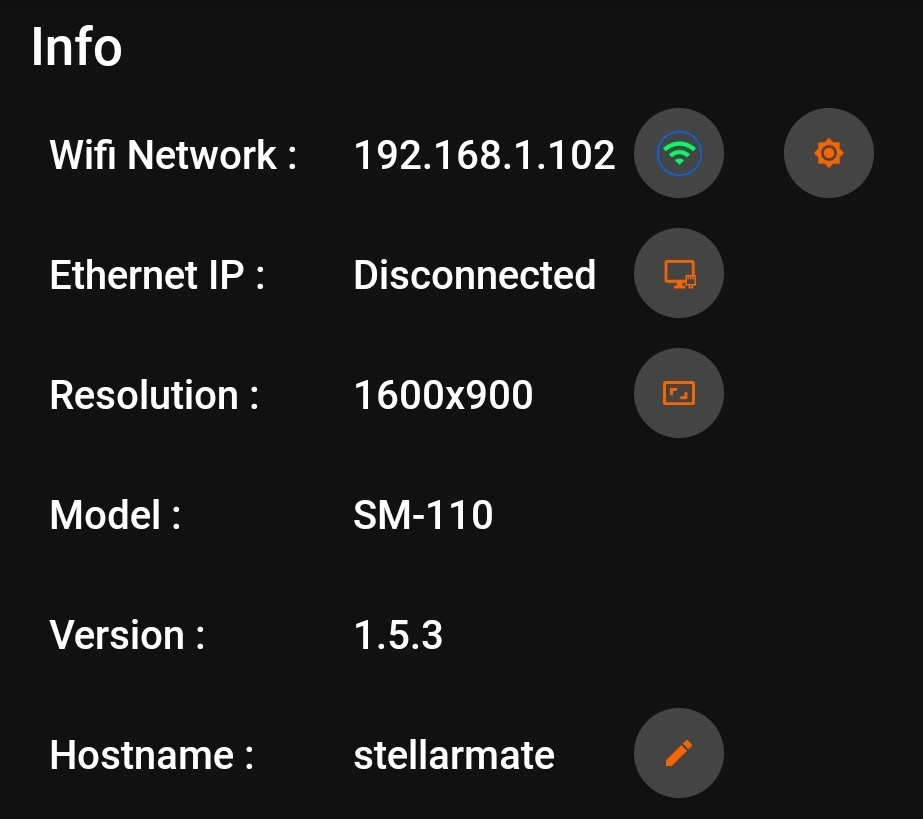
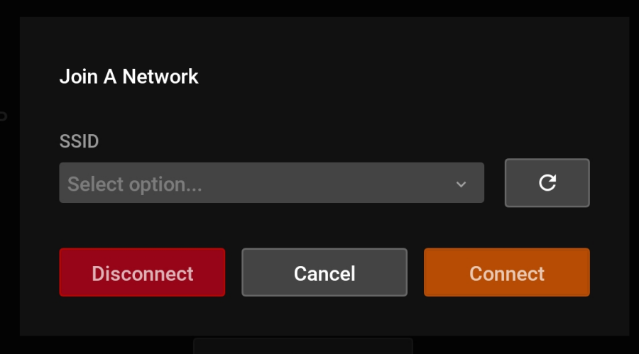
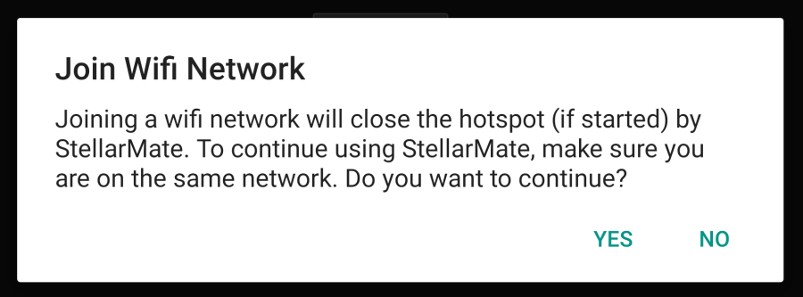

Infrastructure Connection
|
Note |
Infrastructure mode is where StellarMate joins an existing WiFi network. You must first complete the First Time Setup guide before proceeding with this tutorial. |
By default, StellarMate operates in HotSpot mode. Even if configured for WiFi connection or LAN, StellarMate always switches back to HotSpot mode when the other connection modes become unavailable. This is to enable you to always access the device regardless of network availability.
Connecting to WiFi Network
Use the StellarMate App to connect to your WiFi network. From your mobile OS, connect first to the StellarMate HotSpot, then launch the StellarMate App and go to Device tab. Here you can see a few controls to configure StellarMate.

s
Click on the Manage WiFi button (orange cogwheel next to green wifi icon). The App should display a list of detected WiFi networks in the vicinity.

Select the desired WiFi network from the list and press Connect. Enter and double check the WiFi password. A final confirmation warning popup about switching to WiFi infrastructure mode is displayed, press Yes to continue. The App will command StellarMate to join the WiFi network and then begins to scan for StellarMate in the local network. This assumes your phone/tablet will automatically switch to your home WiFi network since it will be disconnected from the hotspot and in most cases this causes Android/iOS to fall back to the next available network. If this does not happen, then go to Network Settings in your mobile OS and connect to the same WiFi network selected above.

This process can take up to 2 minutes. If successful, the device IP address is going to change the new WiFi IP address. Go back to the setup page to make sure the device is connected. If not, double click on the device to ensure it is connected properly.
Once StellarMate is joined to a WiFi network, it will always try to connect to this network unless it is out of range. In this case, it will default back to the HotSpot.